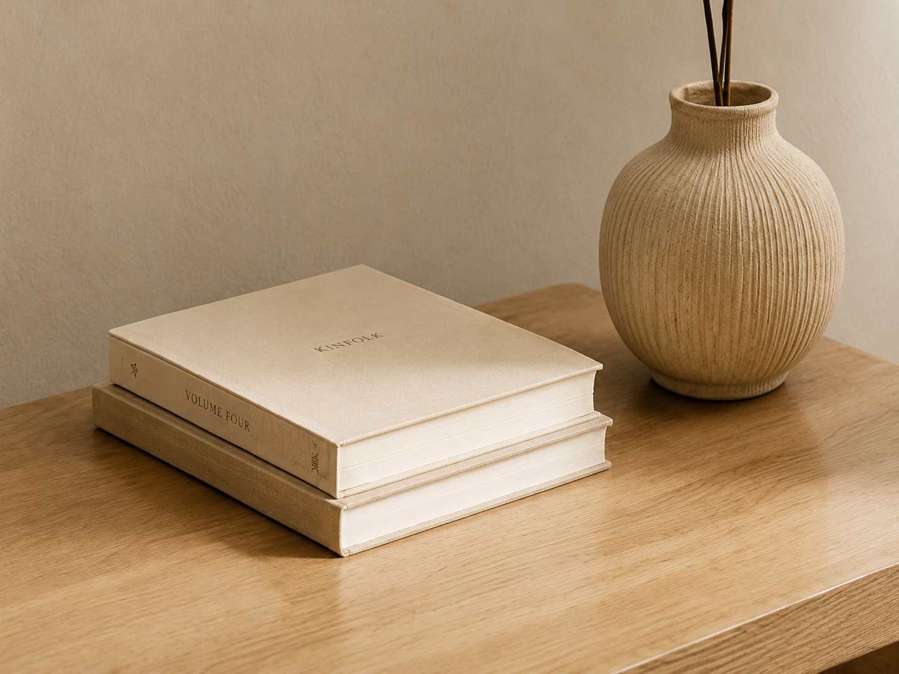

About BANUB
An independent UK online retailer built around useful products, straightforward presentation and dependable customer service.

Everyday products, selected with care
BANUB LTD was created to offer a focused collection of practical products for the home, desk and everyday movement. Our goal is to keep shopping clear: useful descriptions, transparent policies and products chosen for function as well as appearance.
We are building the catalogue step by step and intend to work with reliable suppliers while maintaining clear customer communication.
Browse products